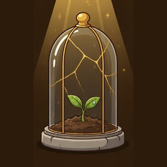
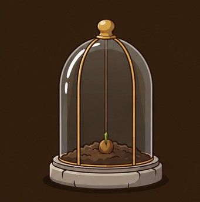

Today the Mac app is a strong adult-content shield (system filter, hosts list, browser guard, private windows, lock, partner) but it knows nothing about feeds, apps or time. This concept brings the Android Unrot edition to the Mac — the sprout under glass, Breathe, Wait before opening, Focus, limits and Progress — and keeps every shield feature that already works.
Native SwiftUI + AppKit, macOS 12 and later, no account, everything stays on the Mac. Painted art is the same as Android (paint-*.jpg). Look: dark, warm, gold, like the phone.
1 · Today
The window opens on the same scene as the phone. The sidebar replaces the bottom tabs; everything else maps one to one.
time given back since 2 Nov, on this Mac and your phone
Young plant in 3h 48m
⏸Breathe
◎Focus
✎Notes
🔒Lock
Today on this Mac
38min feeds · aim 1h
6waits, 4 closed
2kept out
Your rules now
⏳
YouTube, X, Reddit38m used · 22m left today
›
⏸
Wait before Discord, Steam10 s pause · 2 of 5 opens left
›
◷
Work hours 9–17Feeds closed · ends in 1h 41m
›
From you
“You’ll be tired tomorrow.”
The pull is usually strongest around 15:00 on this Mac.
AOne number, both devicesTime given back counts this Mac too. No account: the phone and Mac pair once with a QR code over the local network (later step).
BBreathe from anywhere⌥⌘B, the menu bar, or a Shortcut. Same flower, same gold seal on a crack.
CRules are the homeLimits, waits and schedules sit on Today, like Android, with one click to edit.
2 · Wait before opening (apps and sites)
The Mac version of Open Wait: when you switch to a chosen app or open a chosen site, a calm sheet covers that window only. Closing is always the big easy choice. Works for apps (watched with NSWorkspace) and sites (the existing extension and Safari extension).
🌱 1h 06mMon 23 Nov 15:21
● ● ● youtube.com
7
You opened YouTube. What did you come for?
Breathe out while the ring fills.
A video I needJust boredA breakHabit
3 of 5 opens left today · 22m left
Close YouTubeOpen for 10 min in 7s
“Just bored” offers your Instead list: walk, water, call mum.
1Answer, not guiltThe reason chip is kept as a count only (“bored” 4×), shown in Progress. No URLs, no titles.
2Feeds only, if you wantPer site: block the whole site, or only the feed (YouTube home, Shorts, X “For you”, Reddit front page) while search and links still work.
3Re-checkAfter the chosen 10 minutes the sheet comes back once: “Still on purpose?”
2b · When adult content is tried: crack, then gold
Same rule as the phone. The filter or extension stops an adult page → the glass on Today and in the menu bar cracks and the sprout droops. Breathe within 10 minutes seals it with a gold seam that stays. If something gets through (a pane was open, or “Had a hard moment”), the glass breaks: new glass and seed, total time and garden kept.
Cracked · menu bar icon gets a hairline · “Breathe to seal it · 6:49”

Sealed with gold · after the breaths finish in the Breathe windowNight · quiet hours: feeds closed, sprout asleep, menu bar moon
3 · Menu bar, Focus and widgets
On a Mac the app is mostly closed, so the menu bar is the real home. Opal’s Mac app must stay open and shows only today; ours runs in the background and keeps the history.
🌱 ◎ 24:12Wi‑FiMon 23 Nov 15:30
24:12Focus · Write the report
+5End
1d 4h 12m given back · Sprout ● Shield on
⏸ Breathe◎ Focus 25m
Feeds today38m of 1h
Work hoursends 17:00
Lockuntil Fri 18:00
Gray screenOff
Open Unrot…⌘O
1d 4h
given back
THIS WEEK
−42%
feed time vs your before
Desktop widgets (macOS 14+) · Notification Center on 12–13
1FocusPick a length and what it is for. Feeds and chosen apps close; a sapling grows in the pill and is planted in your wood when it ends. Breaks earned by finishing, not by snoozing.
2macOS Focus filterTurning on the system “Work” Focus can start an Unrot schedule automatically (App Intents Focus filter, macOS 13+). Shortcuts actions: Breathe, Start Focus, Add to Instead.
3Mid-scroll nudgeAfter 15 min in a feed, a small banner at the top: “15 minutes on X. Keep going or Breathe?” No sound, one click away.
4 · Shield: the five panes
The same five panes as the phone’s Glasshouse concept. The existing Overview and Protected Setup become this page. Each pane is a layer; an open pane is amber and has one fix button. Nothing from today’s setup is removed — it moves under the pane it belongs to.
✓Feeds12 sites · feed-only on YouTube, X · in every browser
✓Adult sitesSystem filter, every app · 236,586 sites · SafeSearch
!Limits and quiet hoursUnrot can’t see app switches yet Allow
✓Adult wordsSearches and page text · private windows closed
✓ImagesBrowser image check on
Kept out this week · private
⛉
14 adult pages closedNever shown on share cards
⏳
31 feed opens closedby waits and limits
◷
3 schedule blocksWork hours, Bedtime
Also here
⚙
Protected setupthe full 10-step checklist, as today
›
⌂
Router and DNSwhole-network guide
›
✉
Partneralerts if a pane opens
›
▦
Organization / MDMprofile layers
›
5 · Progress: a garden of days
The Mac has the room the phone lacks: the week and the garden side by side. Numbers are facts the Mac measured (frontmost app time and feed tabs), never projections.
Why you openedbored 9× · habit 6× · a video I need 4×
Garden
M
T
W

T
F
S
Today
A heavy day is a small plant, never a dead one. Saturday’s gold seam: a crack sealed with Breathe.
22days with Unrot
41breaths taken
6h 20min Focus
6 · Where this puts Unrot on the Mac
From the Opal Mac help centre, one sec’s platform page, Cold Turkey’s feature list and Clearspace’s site (read 23 Nov 2026).
Feature
Opal Mac
one sec Mac
Cold Turkey
Clearspace
Unrot Mac (this plan)
Works without an account
No (phone account)
Partly
Yes
No
Yes
Tracks time with the app closed, keeps history
No, today only
–
Yes
Phone
Yes, menu bar agent
Pause before opening apps / sites
Open limits
Yes
Delay to unlock
Breathe to scroll
Yes, with reason and opens left
Block the feed, keep the site
No
No
URL wildcards
No
Yes
Several rules at once
One session
Yes
Yes
Yes
Yes
System-wide adult filter, every app
No
No
Lists
No
Yes (already built)
Hard lock / can’t uninstall
Pro “hardcore”
No
Yes
No
Yes (already built)
Calm growth, no streak reset
Gems
No
No
Streaks
Sprout + garden
Menu bar, widgets, Shortcuts, Focus filter
Menu bar
Menu bar
Menu bar
–
All four
7 · Build plan (in this order)
Unrot look on Mac: dark gold theme, Today / Shield / Progress / You sidebar, painted glass hero, time given back. Hisn edition keeps its look (second Mac scheme, like Android flavors).
Usage engine: frontmost-app time (NSWorkspace) + feed tab time from the extension; stored per day on the Mac; tests.
Rules: limits, wait before opening (apps and sites), schedules; shared rule model with tests; one editor sheet.
Wait sheet over apps (overlay panel) and sites (extension page), reason chips, opens left, re-check.
Feed-only blocking for YouTube, X, Reddit, Instagram, Facebook, TikTok in the extensions.
Breathe window (flower, rounds, gold seal) + ⌥⌘B + Instead list + My notes.
Focus sessions with the floating pill and sapling.
Menu bar popover rebuilt; desktop widgets; Shortcuts actions; macOS Focus filter.
Progress: week, top pulls, reasons, garden, private “kept out”.
First run in the phone’s order (one question a screen, your picture, pledge), then the permission steps that exist today.
Kept, each with a home: system filter, hosts list, browser guard, private windows, Safari extension, site check, extra sites, keywords, lock + schedules + partner, gray screen, router/DNS guide, MDM/organization mode, Arabic. Later: phone ↔ Mac pairing on the local network, more painted states.